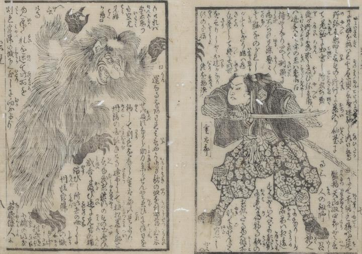

岩見重太郎が狒々を退治しようと刀を持っている。狒々は立ち上がって両手を挙げ、片足で立っている。
著作者：芳とら／出典：親書誌：U426_nichibunken_0384：岩見重太郎一代記 2巻；イワミ ジュウタロウ イチダイキ 2カン／日付：2014／資源識別子：U426_nichibunken_0384_0002_0000
Copyright (c)2010- International Research Center for Japanese Studies, Kyoto, Japan. All rights reserved.